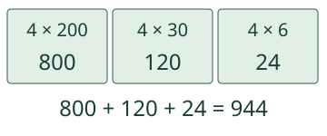
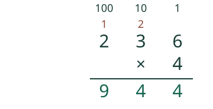
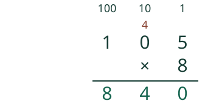

Aava laskee neljä samanlaista pakkausta.
Kerron osat ja säilytän muistin.
Pakkauksessa on 236 helmeä. Neljä pakkausta on 4 × 236.
Miten tämä lasketaan?
Osat selittävät allekkain laskun
Yhdessä pakkauksessa on 236 helmeä: 2 sataa,3 kymppiä ja 6 irtonaista. Neljässä pakkauksessa on 4 × 200 + 4 × 30 + 4 × 6 = 800 + 120 + 24 = 944 helmeä. Kuva esittää arvoja, ei helmien kokoja.

Sama lasku sarakkeissa
Aloita oikealta. 4 × 6 = 24 ykköstä:kirjoita 4 ja siirrä 2 kymppiä muistiin. Sitten 4 × 3 + 2 = 14 kymppiä:kirjoita 4 ja siirrä 1 sata. Lopuksi 4 × 2 + 1 = 9 sataa. Vastaus 944.

Toinen esimerkki: 57 × 8
8 × 7 = 56:kirjoita 6 ja siirrä 5 kymppiä. Sitten 8 × 5 + 5 = 45 kymppiä. Niistä 5 kymppiä jää kymppien paikalle ja 4 sataa kirjoitetaan vasemmalle. 57 × 8 = 456. Muisti ei mene uudelleen kertojaksi: 8 × (5 + 5) olisi eri lasku.
Nolla pitää paikan
204 × 3 = 612. Ykkösistä 12: 2 alas ja 1 kymppi muistiin. Kympeissä 3 × 0 + 1 = 1. Sadoissa 3 × 2 = 6. Keskellä oleva 0 ei oikeuta poistamaan koko saraketta. Laskussa 105 × 8 myös nollasarake ottaa vastaan muistin:tulos 840.

Ennakoi: onko 57 × 8 pienempi vai suurempi kuin 50 × 8?
Perustelu
Suurempi. Samojen kahdeksan 50:n lisäksi tulee kahdeksan 7:ää: 400 + 56 = 456.
Kokeile itse
57 × 8. Mikä on tulo?
Tarvitsen vihjeen
Pidä ykköset ykkösten alla. Kerro sarakkeen numero, lisää edellisestä paikasta saatu muisti. Kirjoita tuloksen ykkösnumero ja siirrä kymmenet seuraavaan paikkaan.
Rakennan yhden sarakkeen
Voit harjoitella yhtä välivaihetta. Se ei ole pakollinen reitti lopputulokseen.
57 × 8: 8 × 7 ykköstä. Mitä kirjoitat ja siirrät?
Kokeile toisessa tilanteessa
Kolme pakkausta, jokaisessa 124 kynää: 3 × (100 + 20 + 4) = 300 + 60 + 12 = 372. Miten sama näkyy allekkain?
Opettajalle ja ilman ruutua
Luokat 3–6. Vaaditut M-MULTAB-ALL ja M-PLACE-05 säilyvät. Tässä moninumeroista kokonaislukua 0–999 kerrotaan yhdellä numerolla 0–9. Menetelmä toimii myös nollalla ja yhdellä. Malli ei opeta moninumeroista kertojaa, desimaalituloja tai negatiivisia tekijöitä. Muistin yksikkö muuttuu sarakkeesta toiseen. Mahdolliset alkunollat tulosrivillä voi jättää pois; sisänollaa ei poisteta.
Kokoa 236 paikkakorteilla tai sadan,kymmenen ja yhden nipuilla. Toista neljä kertaa, vaihda 10 ykköstä kympiksi ja 10 kymppiä sadaksi. Kirjaa rinnalle osatulot ja sarakekäsittely. Oppilas voi käyttää paperia, näppäimistöä tai omaa toimivaa menetelmää.
Tulos tarkistaa vain tulon. Vapaa kahden luvun sarakevastaus harjoittelee yhtä välivaihetta annetulla sisääntulevalla muistilla, ei varmista koko algoritmin rakentamista. Palaute koskee vain nykyistä paikallista vastausta. Ei aikarajaa, puhe-, kuuntelu-, nimeämis- tai klikkausjärjestyspakkoa eikä henkilöhistoriaa. Malli ja vihje ovat tukea, eivät itsenäisen tai viivästetyn hallinnan näyttö. Tarkistin hyväksyy kokonaisluvun samanarvoisilla etunollilla, plusmerkillä ja desimaaliosan nollilla. Tarkistin ei pyöristä. Enintään 128 merkkiä/kenttä.
Lopuksi: Miksi 3 × 204 ei ole vain 3 × 24?